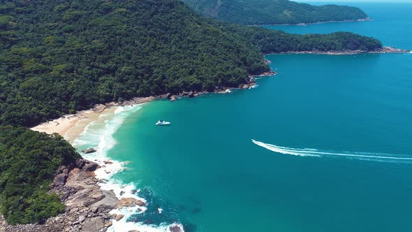
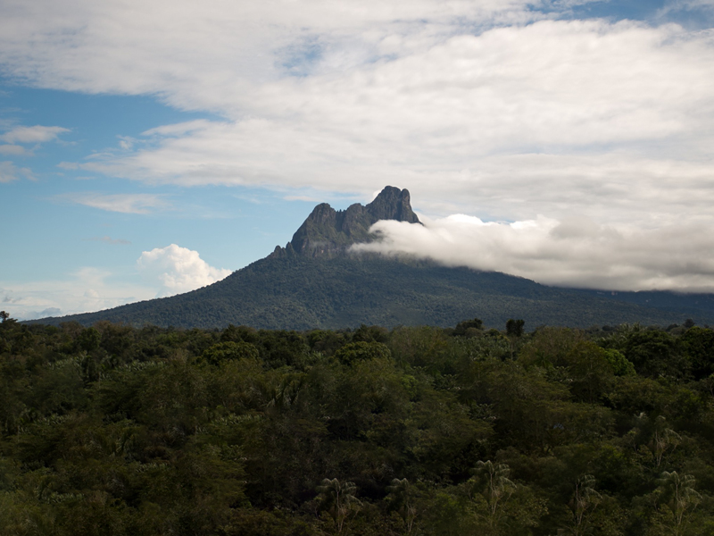
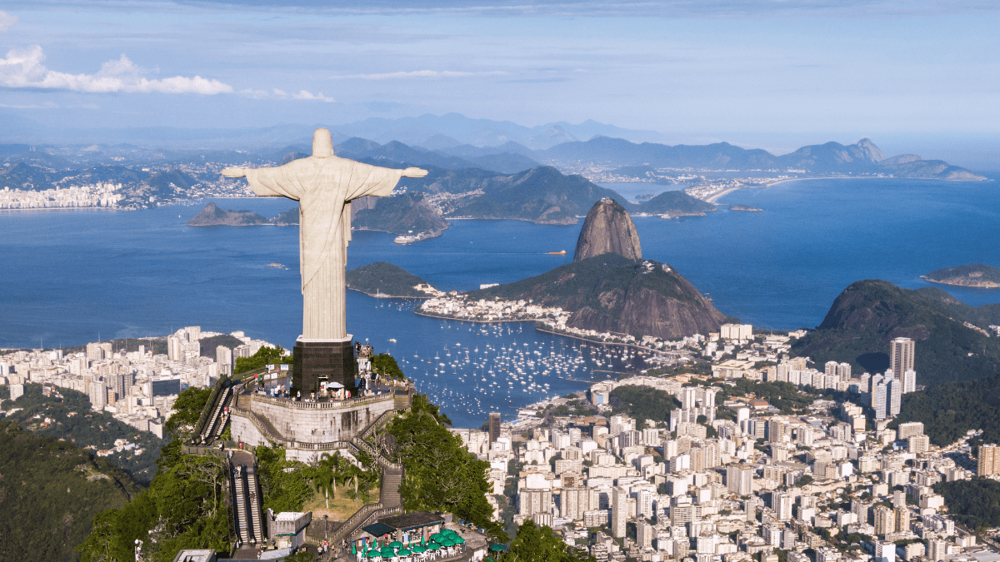

Ubatuba
Localizada no Litoral Norte do estado de São Paulo, a cidade de Ubatuba é um paraíso para surfistas e praieros.

Pico da Neblina
O Pico da Neblina, localizado no estado do Amazonas. Com 2.995 metros de altitude, ele é o ponto mais alto do Brasil, e também um destino rodeado de rica biodiversidade e uma cultura indígena única.

Rio de Janeiro
Com grandes pontos turísticos como, praias, montanhas e o conhecido Cristo Redentor, o Rio de Janeiro encanta todos os visitantes.
